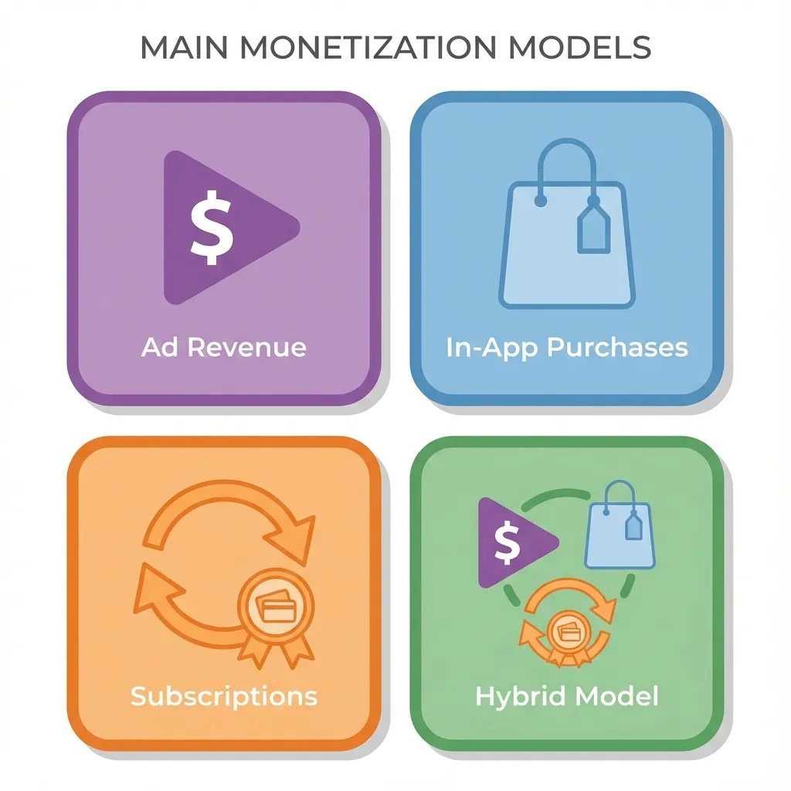
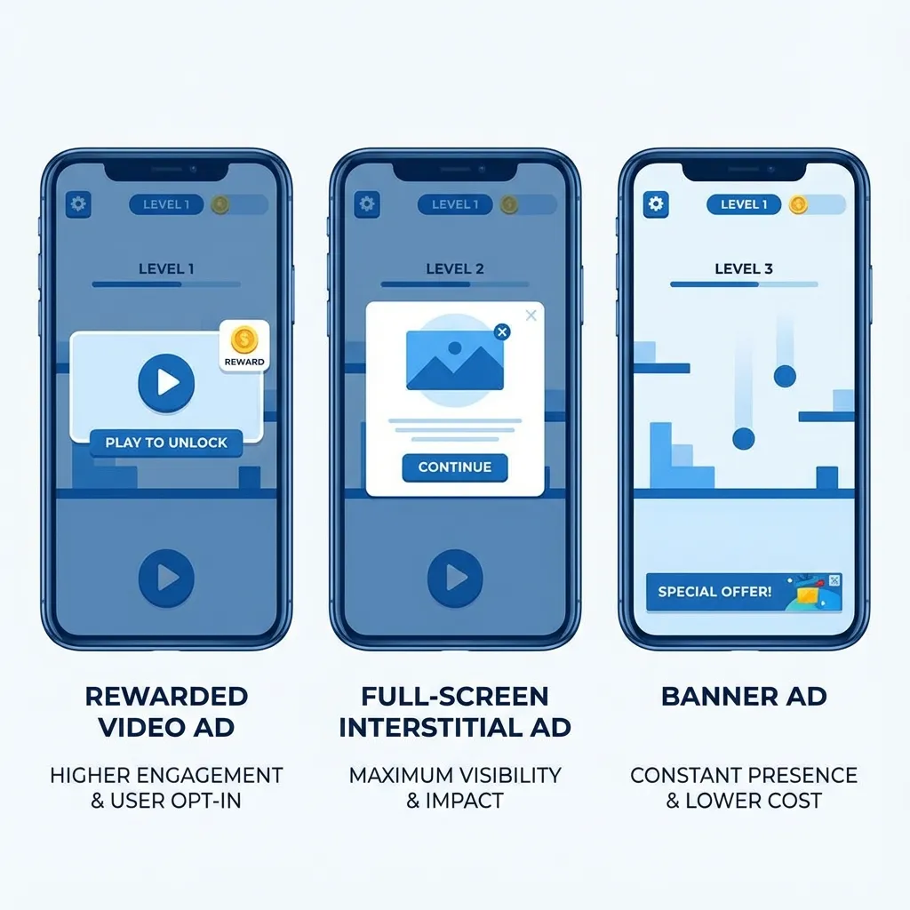
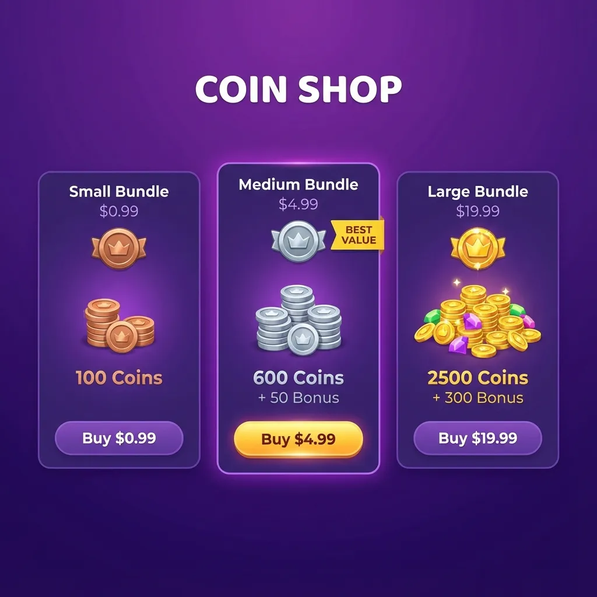
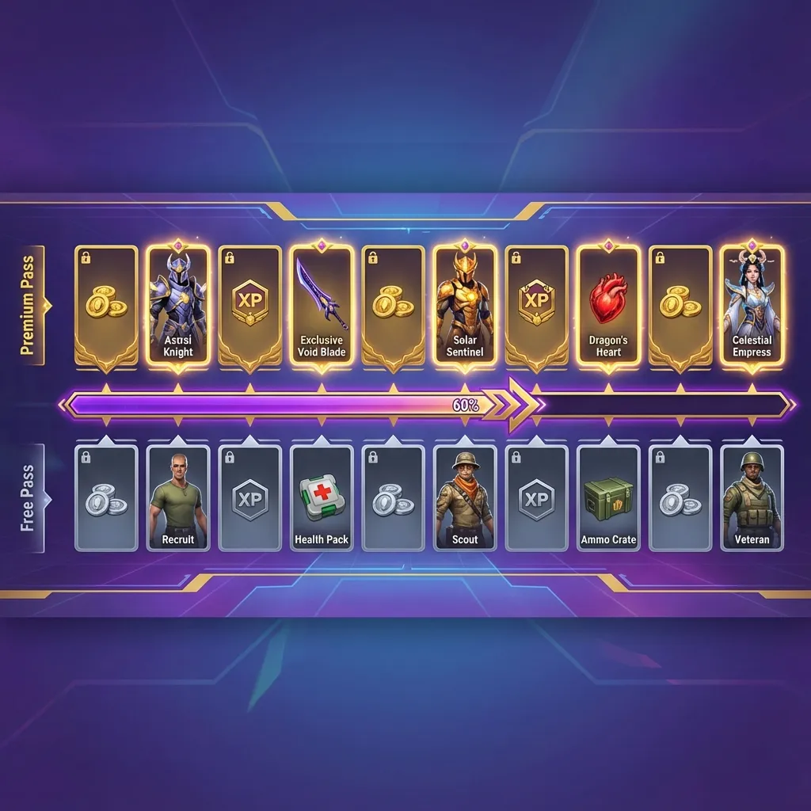
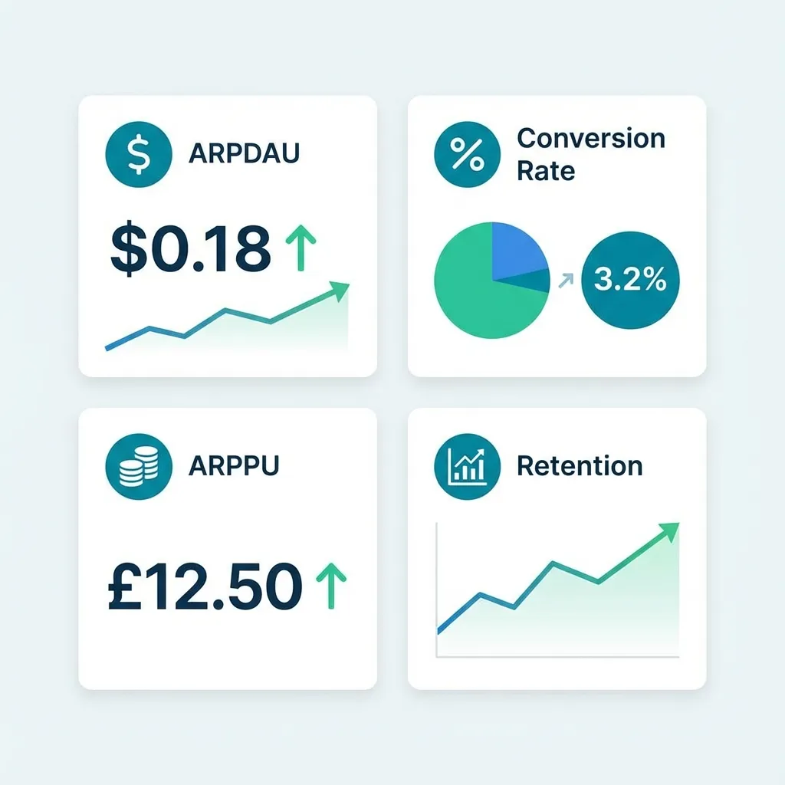
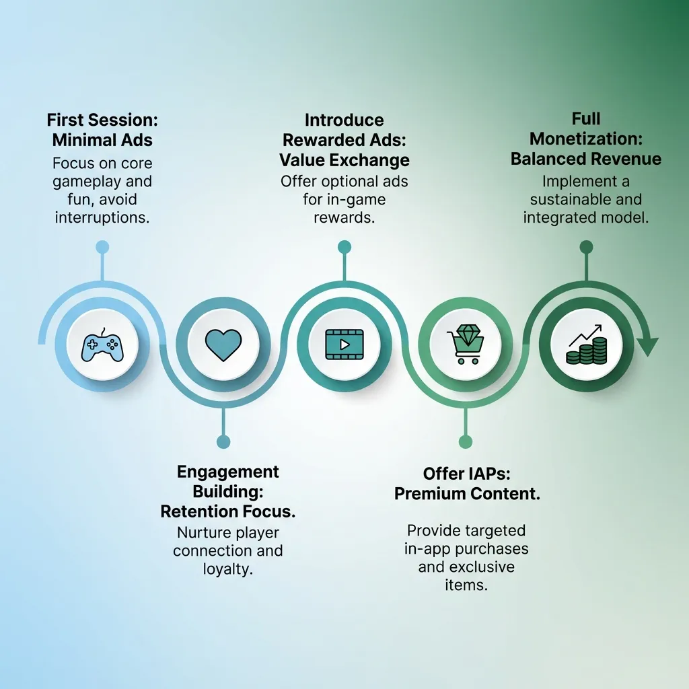

Mobile Game Monetization Strategies 2026
BUSINESS
Understanding Mobile Game Monetization Models
Mobile game monetization has evolved dramatically, with developers now having multiple revenue streams to choose from. The key to successful monetization is matching your strategy to your game genre, target audience, and player behavior patterns. In 2026, the most successful mobile games combine multiple monetization methods rather than relying on a single revenue source.
For Pakistani indie developers, understanding these monetization models is crucial for transforming your game from a passion project into a profitable business. The right monetization strategy can mean the difference between a few dollars per month and sustainable income that funds your next project.
Advertising Revenue: The Foundation of Free-to-Play
Rewarded Video Ads: The Player-Friendly Approach
Rewarded video ads have become the gold standard for mobile game monetization because they benefit both players and developers. Players voluntarily watch 15-30 second video advertisements in exchange for valuable in-game rewards like extra lives, currency, power-ups, or time skips. This opt-in model maintains positive user experience while generating significantly higher eCPM (effective cost per thousand impressions) rates than forced ads.
The optimal implementation shows rewarded video opportunities at strategic moments when players need help most. For example, offer a continue option after losing a level, extra moves in puzzle games, or double rewards after completing challenges. Players should always have the choice to watch or skip, preserving their sense of control over the experience.
Interstitial Ads: Balancing Revenue and Retention
Interstitial ads are full-screen advertisements displayed during natural breaks in gameplay, such as between levels or after completing rounds. When implemented correctly, these ads generate substantial revenue without significantly harming player retention. The critical factor is frequency—showing interstitials too often drives players away, while too few leaves money on the table.
Industry best practices suggest showing interstitials after every 2-3 gameplay sessions rather than after every single round. Always place them at logical stopping points, never during active gameplay or mid-level. A/B test different frequencies starting conservatively (every 3 rounds) and gradually increasing while monitoring retention metrics closely.
Banner Ads: Passive Revenue Stream
Banner ads appear as small rectangular advertisements typically positioned at the top or bottom of your game screen. While they generate the lowest revenue per impression compared to other ad formats, banners provide consistent passive income without interrupting gameplay. They work best in games with longer session times where players spend several minutes per session.
Avoid placing banners where players frequently tap during gameplay to prevent accidental clicks, which frustrate users and can get your app flagged by ad networks. Position them thoughtfully in UI-heavy screens like menus, shops, or level selection pages where they're visible but not intrusive.
In-App Purchases: Premium Revenue Opportunities
Consumable IAPs: Ongoing Revenue
Consumable in-app purchases are items players can buy repeatedly, such as virtual currency, extra lives, boosters, or time skips. These represent the highest revenue potential for successful games because engaged players purchase them multiple times throughout their lifetime. The key is creating genuine value—players should feel purchases help them progress or enhance enjoyment, not that they're required to overcome unfair difficulty.
Price your consumables in tiers to appeal to different spending levels. Offer small purchases around $0.99-$1.99 for casual spenders, medium packs at $4.99-$9.99 for regular players, and premium bundles at $19.99-$49.99 for whales (high-spending players who generate disproportionate revenue). Include "best value" badges on mid-tier options to guide purchasing decisions.
Non-Consumable IAPs: One-Time Purchases
Non-consumable purchases are permanent unlocks like ad removal, premium features, or full game access. The most universally appreciated non-consumable is ad removal, typically priced between $2.99-$4.99. This appeals to players who enjoy your game but find ads disruptive, converting them from ad-supported to premium users.
Timing the offer matters significantly—don't aggressively push ad removal immediately after download. Wait until players have invested 20-30 minutes and demonstrated engagement before presenting the option. This ensures you're targeting players likely to continue playing long-term, maximizing the lifetime value of the purchase.
Cosmetic Items: No Pay-to-Win Concerns
Cosmetic IAPs like character skins, themes, visual effects, or customization options generate revenue without affecting gameplay balance. This approach is particularly popular in competitive or skill-based games where players resist pay-to-win mechanics. Cosmetics allow self-expression and status signaling while keeping core gameplay fair for all players.
Create cosmetic items that are visually distinct and desirable but never required for progression. Limited-time or seasonal cosmetics create urgency and exclusivity, encouraging purchases from collectors and dedicated fans. This strategy works exceptionally well when combined with ad-based monetization for broader revenue coverage.
Subscription Models: Recurring Revenue
Premium Passes and Battle Passes
Battle pass systems have migrated from PC and console games to mobile, offering tiered rewards over a set period (typically 30-60 days). Players purchase the pass and unlock rewards by completing challenges or playing regularly. This model generates predictable monthly revenue while increasing engagement as players return daily to progress their battle pass.
Design battle pass rewards that feel substantial—players should perceive clear value exceeding the purchase price. Include exclusive cosmetics, generous currency bundles, and useful boosters spread across 20-50 reward tiers. Offer a free tier with modest rewards alongside the premium paid tier to let all players participate while incentivizing upgrades.
VIP Subscriptions: Premium Player Experience
VIP subscriptions offer ongoing benefits like daily currency, exclusive content, faster progression, or ad-free gameplay for a monthly fee (typically $4.99-$9.99). This model works best in games with strong retention where players engage daily over months. The subscription must deliver tangible daily value that justifies the recurring cost.
Implement a free trial period (3-7 days) to let players experience VIP benefits before committing. Once they've enjoyed the enhanced experience, they're more likely to subscribe to maintain those perks. Clearly communicate subscription terms, auto-renewal policies, and cancellation procedures to maintain trust and comply with app store requirements.
Hybrid Monetization: Combining Multiple Streams
The Optimal Revenue Mix
The most successful mobile games in 2026 use hybrid monetization combining ads and IAPs strategically. This approach maximizes revenue by monetizing both non-paying players (through ads) and paying players (through purchases). Implement both systems thoughtfully so they complement rather than conflict with each other.
A proven hybrid approach offers rewarded ads for free progression while selling IAPs that accelerate or enhance the experience. For example, players can watch ads to earn currency slowly or purchase currency bundles to progress faster. This respects both player types—those with time but limited money, and those willing to spend for convenience.
Balancing Monetization and Player Experience
The cardinal rule of monetization is never making players feel exploited or manipulated. Design your game to be genuinely enjoyable without spending, with monetization offering convenience, cosmetics, or optional enhancements. Games that gate core content behind paywalls or create frustrating difficulty spikes to force purchases generate poor reviews and high churn rates.
Test your monetization balance by playing your own game without spending. If progression feels unfairly slow, difficulty feels artificially inflated, or ads feel overwhelming, your players will feel the same way. Successful long-term monetization depends on maintaining positive player sentiment and encouraging voluntary spending rather than forced purchases.
Regional Monetization Considerations
Optimizing for Pakistani and South Asian Markets
Understanding your regional market economics is essential for appropriate pricing. Pakistani players have different spending power compared to Western markets, requiring adjusted IAP pricing for optimal conversion. Consider offering lower-priced options or localized pricing that respects regional purchasing power while maintaining profitability.
Mobile payment methods vary by region—ensure your game supports popular local payment options beyond credit cards. In Pakistan and South Asia, mobile wallet integrations, carrier billing, and alternative payment platforms can significantly increase purchase conversion rates compared to credit-card-only options.
Global Revenue Opportunities
While optimizing for your local market, don't ignore global revenue potential. The majority of mobile game revenue comes from specific high-value markets including the United States, China, Japan, South Korea, and Western Europe. Implement analytics to identify which countries generate the most revenue from your game and optimize ad networks and pricing for those regions.
Use mediation platforms that automatically select the highest-paying ad networks for each user's location. This ensures players in high-eCPM countries generate maximum ad revenue while maintaining good fill rates in lower-value markets. The revenue difference between optimized and unoptimized ad implementation can be 2-3x for the same player base.
Monetization Analytics and Optimization
Key Metrics to Track
Monitor Average Revenue Per Daily Active User (ARPDAU) as your primary monetization health metric. This number tells you exactly how much revenue each player generates on average per day. For ad-supported hyper-casual games, target ARPDAU of $0.02-$0.05, while games with IAPs should aim for $0.10-$0.50+ depending on genre and audience.
Track conversion rate (percentage of players making any purchase), Average Revenue Per Paying User (ARPPU), and payer retention separately from overall retention. These metrics reveal whether your monetization targets the right players at the right moments. Low conversion rates suggest poor IAP value proposition or inappropriate pricing, while low ARPPU indicates you're not offering enough purchase variety.
A/B Testing Monetization Strategies
Systematically test different monetization approaches using A/B testing frameworks. Test one variable at a time—ad frequency, IAP pricing, reward amounts, or offer placement. Split your player base into control and test groups, run experiments for at least 7-14 days to gather statistically significant data, then implement winning variations permanently.
Common elements worth testing include first purchase offers, ad frequency timing, IAP bundle pricing, and rewarded ad reward values. Small optimizations compound over time—improving conversion rate by 10% and ARPPU by 15% together increase total revenue by approximately 26%, significantly impacting your game's profitability.
Ethical Monetization Practices
Avoiding Dark Patterns and Manipulation
Ethical monetization builds sustainable long-term revenue while predatory practices generate short-term gains followed by backlash and abandonment. Avoid dark patterns like hiding subscription auto-renewal, making cancellation difficult, misleading pricing displays, or creating artificial urgency through fake timers and false scarcity.
Be transparent about costs, clearly display subscription terms, and make cancellation as easy as subscription. Players who feel respected and treated fairly become long-term supporters who recommend your games to friends. Ethical practices also ensure compliance with increasingly strict app store policies and regional consumer protection laws.
Protecting Younger Players
If your game appeals to children or teenagers, implement appropriate monetization safeguards. Consider requiring parental approval for purchases, setting spending limits, or avoiding aggressive monetization tactics altogether in games rated for younger audiences. Many regions including the EU have strict regulations around monetizing children's apps.
App stores increasingly scrutinize games targeting children, rejecting or removing apps that violate child safety policies. Beyond regulatory compliance, ethical considerations should guide your approach—creating exploitative experiences damages your reputation and the broader game development community.
Common Monetization Mistakes
Over-Monetizing Too Early
The biggest monetization mistake is bombarding new players with ads and purchase offers before they're engaged. Players need time to understand your game's value before they're willing to watch ads or make purchases. Implement a grace period (first 5-10 minutes or first session) with minimal monetization to let players get hooked on your gameplay.
Aggressive early monetization increases install-to-retention drop-off dramatically. Players who haven't invested time in your game will delete it immediately rather than tolerating intrusive ads. Build engagement first, then gradually introduce monetization as players demonstrate commitment through continued play sessions.
Ignoring Player Feedback
Monitor app store reviews and player feedback specifically about monetization. If players consistently complain about too many ads, unfair pricing, or pay-to-win mechanics, take those concerns seriously. Addressing monetization complaints quickly can prevent negative review spirals that tank your app store ratings and visibility.
Implement in-game feedback mechanisms to understand player sentiment before it reaches public reviews. Simple surveys asking "How do you feel about ads in this game?" or "Would you consider purchasing this item at this price?" provide valuable data for optimization while making players feel heard.
Future Monetization Trends
Emerging Revenue Models
Watch for emerging monetization trends including blockchain integration, NFT collectibles, and play-to-earn mechanics. While controversial and still evolving, these technologies offer new revenue possibilities for forward-thinking developers. Approach them carefully, ensuring they add genuine value rather than serving as gimmicks.
Programmatic advertising continues advancing with better targeting, higher eCPMs, and improved user experience. Ad networks increasingly use machine learning to show the most relevant ads to each player, improving both engagement rates and revenue. Stay current with ad network innovations to maximize your advertising income.
Adapting to Market Changes
Mobile game monetization constantly evolves as player expectations shift, regulations change, and new technologies emerge. Successful developers continuously experiment, adapt strategies based on data, and remain flexible in their approach. What works today may need adjustment tomorrow as the market matures and competition increases.
Invest time in learning from successful games in your genre—analyze their monetization implementation, pricing strategies, and offer timing. Adapt proven approaches to your specific game and audience rather than copying blindly. The most profitable monetization strategy is one tailored to your unique game, genre, and player base.